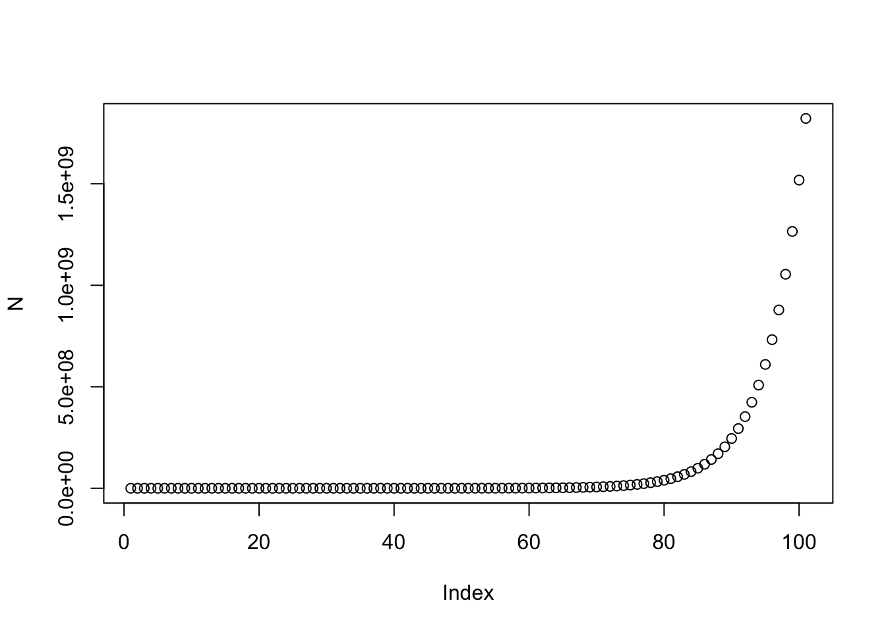
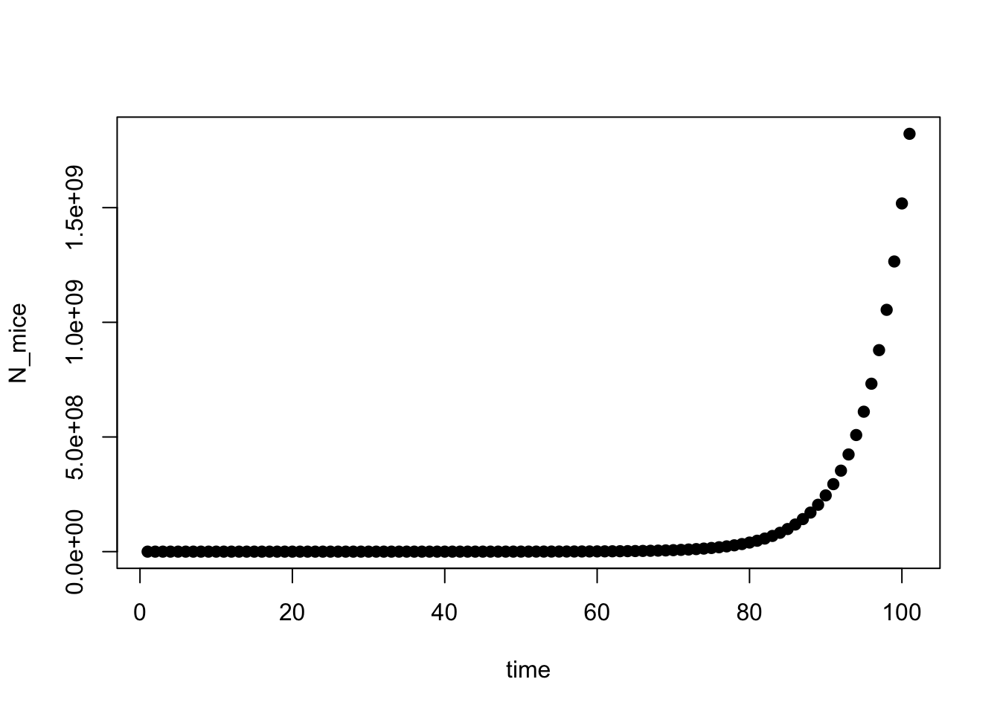
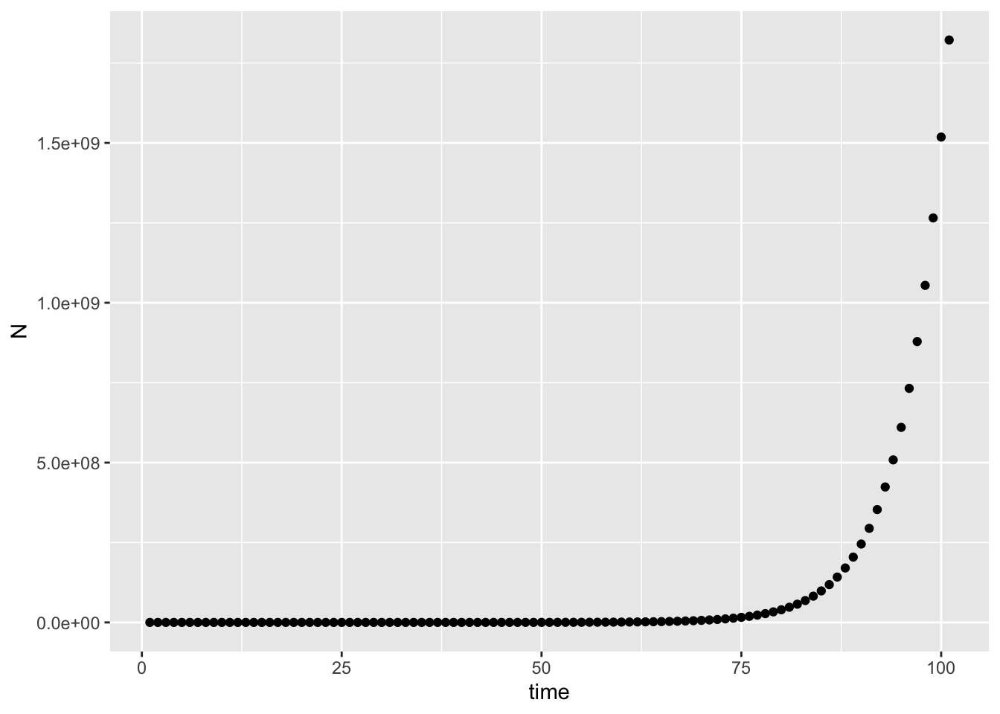
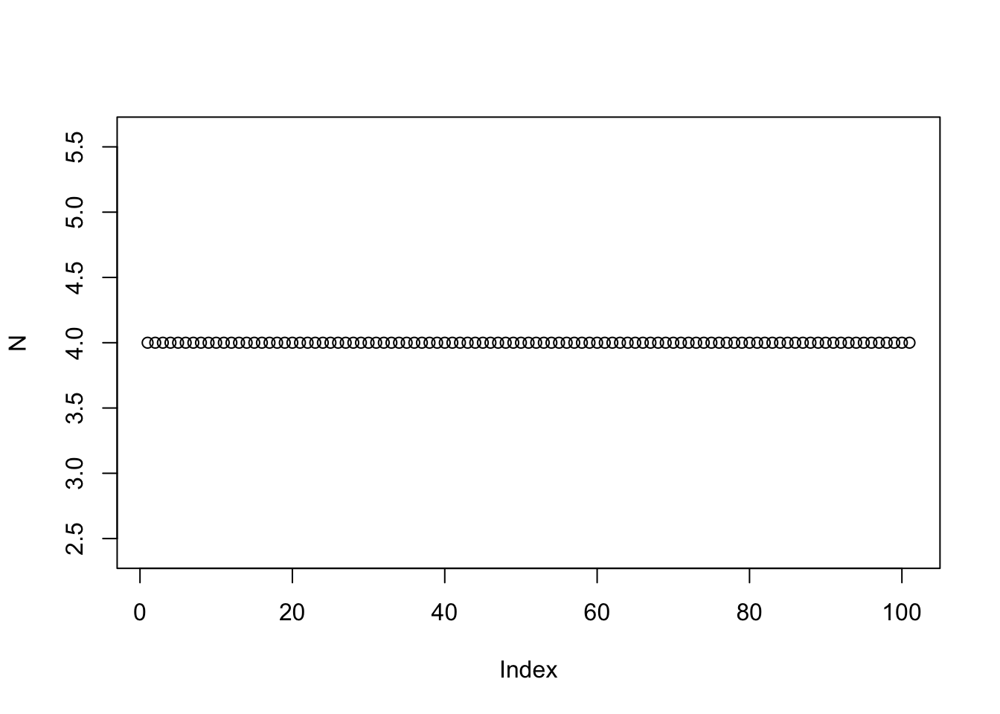
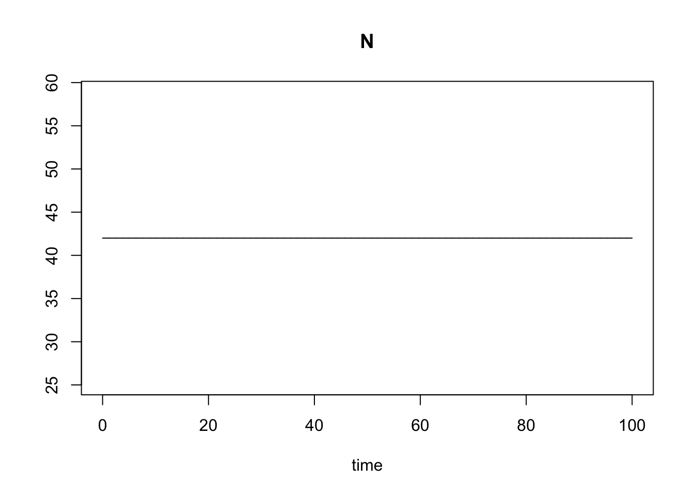

5+5## [1] 10a <- 5
a## [1] 5a+5## [1] 10a <- c(5,13,2)
a## [1] 5 13 2a[3]## [1] 2a[3] <- 16
a## [1] 5 13 16sqrt(16)## [1] 4?sqrt
# Square root of 97?
a[4] <- NA
a## [1] 5 13 16 NAmean(a)## [1] NAmean(a,na.rm=T)## [1] 11.33333my_fun <- function(x,y){
z <- x+y
return(z)
}
my_fun(17,3)## [1] 20for(i in 1:5){
z <- i + 6
print(z)
}## [1] 7
## [1] 8
## [1] 9
## [1] 10
## [1] 11for(i in 1:5){
a[i] <- i
}
a## [1] 1 2 3 4 5## Step 1. Write values for the parameters in the model (and initial values of state variables)
# d - the *fraction* of mice in yard eaten by cat / day --> 0-1
d <- .7
# b - the *number* of mice born per mouse / day --> N (0-infinity)
b <- 3
# m - the *number* of mice arriving in the yard per day --> N (0-infinity)
m <- 4
# N0 - the initial number of mice in the yard when we begin the survey
N0 <- 42
## Step 2. Write a function that will calculate values of number of mice from one time step to the next.
mice <- function(N0,d,b,m){
Nt1 <- (1+b)*(1-d)*N0 - m
return(Nt1)
}
## Step 3. Call the function
mice(N0,d,b,m)## [1] 46.4## Step 4. Follow the mice population size over some time intervals
# N - a variable where we record the population size over time
N <- N0
for(i in 1:100){
Nt1 <- mice(N0,d,b,m)
N <- c(N,Nt1)
N0 <- Nt1
}
N## [1] 4.200000e+01 4.640000e+01 5.168000e+01 5.801600e+01 6.561920e+01
## [6] 7.474304e+01 8.569165e+01 9.882998e+01 1.145960e+02 1.335152e+02
## [11] 1.562182e+02 1.834618e+02 2.161542e+02 2.553851e+02 3.024621e+02
## [16] 3.589545e+02 4.267454e+02 5.080944e+02 6.057133e+02 7.228560e+02
## [21] 8.634272e+02 1.032113e+03 1.234535e+03 1.477442e+03 1.768931e+03
## [26] 2.118717e+03 2.538460e+03 3.042152e+03 3.646583e+03 4.371899e+03
## [31] 5.242279e+03 6.286735e+03 7.540082e+03 9.044098e+03 1.084892e+04
## [36] 1.301470e+04 1.561364e+04 1.873237e+04 2.247484e+04 2.696581e+04
## [41] 3.235497e+04 3.882197e+04 4.658236e+04 5.589484e+04 6.706980e+04
## [46] 8.047976e+04 9.657172e+04 1.158821e+05 1.390545e+05 1.668614e+05
## [51] 2.002296e+05 2.402716e+05 2.883219e+05 3.459823e+05 4.151747e+05
## [56] 4.982056e+05 5.978428e+05 7.174073e+05 8.608848e+05 1.033058e+06
## [61] 1.239665e+06 1.487594e+06 1.785109e+06 2.142127e+06 2.570549e+06
## [66] 3.084654e+06 3.701581e+06 4.441893e+06 5.330268e+06 6.396318e+06
## [71] 7.675577e+06 9.210688e+06 1.105282e+07 1.326338e+07 1.591606e+07
## [76] 1.909926e+07 2.291911e+07 2.750293e+07 3.300351e+07 3.960421e+07
## [81] 4.752505e+07 5.703005e+07 6.843606e+07 8.212327e+07 9.854791e+07
## [86] 1.182575e+08 1.419090e+08 1.702908e+08 2.043489e+08 2.452187e+08
## [91] 2.942625e+08 3.531149e+08 4.237379e+08 5.084855e+08 6.101826e+08
## [96] 7.322191e+08 8.786629e+08 1.054396e+09 1.265275e+09 1.518330e+09
## [101] 1.821995e+09plot(N)
plot(N,xlab="time",ylab="N_mice",pch=19,col="black")
dat <- as.data.frame(N)
dat$time <- as.numeric(rownames(dat))
library(ggplot2)
ggplot2::ggplot(dat,aes(time,N)) + geom_point()
1. Explain the following statement- R, the number of surviving individuals per parent, is constant regardless of population size, and invariable for all individuals in the population. Contrast this with age-structured models (like we discussed last week).
We recall from Jackson et al. 2000 that in an age-structured model, not all individuals participate equally in the processes. In that example, they didn’t all have identical birth, predation, mortality rates.
2. Explain the difference between R in the recursion equation for exponential growth and r in the difference equation. What does per capita mean? What value of R indicates the population size is not changing and what value of r indicates the population size is not changing?
R in the recursion equation (discrete-time) is – the number of individuals that each parent / N is replaced by in the next time unit. A population would be considered to be constant (not changing) if each parent / N replaces itself… and thus R = 1.
We can see this in R: see R code, Exercise 7
## Exercise 7. Simulation model of discrete-time exponential growth
R <- 1
N0 <- 4
disc_exp <- function(R,N0){
Nt1 <- R*N0
return(Nt1)
}
N <- N0
for(i in 1:100){
Nt1 <- disc_exp(R,N0)
N <- c(N,Nt1)
N0 <- Nt1
}
plot(N)
In the continuous time model (if births and deaths can occur at any time point, rather than in specific seasons), the population growth rate term is instead r, which is r=b-d, or the per capita rate of change in the number of individuals. This tells us the rate at which the population changes per individual in the population. So you can obtain the change in the number of individuals. For example, if r = 0, then births are equal to deaths, and so the population is not changing. We refer to r as the per capita change in the number of individuals.
We can see this in R: R code, Exercise 8
## Exercise 8. Continuous time model of exponential growth
library(deSolve)
cont_exp <- function(t, state, parameters) {
with(as.list(c(state, parameters)), {
dN <- r * N
return(list(dN))
})
}
parameters <- c(r = 0)
state <- c(N = 42)
times <- seq(0, 100, by = 0.01)
out <- deSolve::ode(y = state, times = times, func = cont_exp, parms = parameters)
plot(out)
3. How did the authors come up with the equation above Figure 3.3 directly from that figure? (Recall the formula for a line)
**4. Be prepared to repeat what’s written in the Box under equation 3.5b when I ask “what does the *logistic growth model assume about how population growth rate changes with increasing population size?“**
5. Explain the difference between a linear and non-linear model of population growth (exponential and logistic), basically using what is written in the box under Figure 3.4, and using equations 3.5b and 3.2 to illustrate this difference.